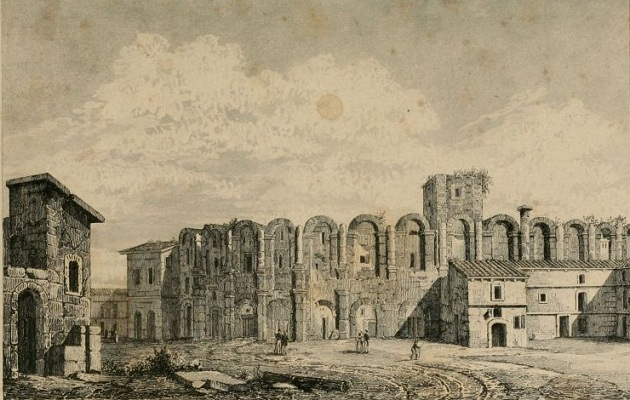

History

Today's France is almost used to the boundaries of Celtic Gauls (French: Celte Gaulois were also badly, pronounced selt golwa) acquired abroad by the Ancient Gaul (French: Gaule, pronounced goals) is the same as the border. Gaul, B.c. 1. century Roman Emperor Julius Caesar by peoples of Gaul seized gradually adopted Roman culture and language of Rome. Then, over time, these changes in its own language, contemporary French foundations would occur. France the territory of Christianity's first centuries A.d. 2. and 3. the next two centuries and centuries in so the possibility of spreading quickly found that, from the writings of Saint Jerome, the only region of Gaul wrote that "freed from perversion do".
After Jesus 4. century, the eastern border along the Rhine in Gaul, the Germanic tribes were led by. The most effective thing in these communities, the ancient name of Francie to Capetian France. If the name is found in the Paris, France used today Capet Kings of the name of the region for which, directed by La Rosa comes from. After the fall of the Roman Empire, the Germanic tribes spread on the territory of the Franks in Europe, not to convert to Catholicism were the first. The eldest daughter of the Church, therefore, to "France" (La fille ainée de l ' Église) were given the adjective, Franks is also based on that call themselves "Christians" as the best of France.
If the start of the history of France as a country separate from the 843 Treaty of Verdun Carolingian Empire dated East Francia, Middle Francia and West Francia as the three started with the break up. West Francia France almost covered the territory of today's, and indeed the foundations of contemporary France this Kingdom was founded upon.
The Carolingian dynasty in France, the Duke of France and count of Paris, 987, Hugh Capet, King of France as directed up to the coronation. His descendants with Valois and Bourbon dynasties also staged a series of war made unity in the country. Kingdom management 17. century and King XIV. Louis, culminating in the period. In this process, the most populous country in the European continent, France became the and European culture, policies and economy was one of the most effective power. French was the language of diplomacy and for a long period, it remained while preserving nature. Age of enlightenment took place largely French intellectual circles. French scientists tested 18. they threw a big scientific discovery in the 21st century under the signatures. In addition France in this period, Africa, America and Asia made many overseas territories.